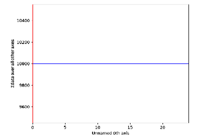
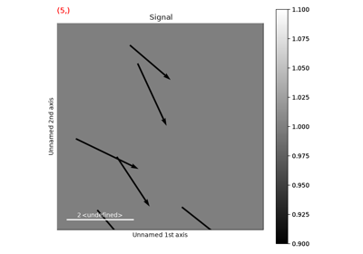
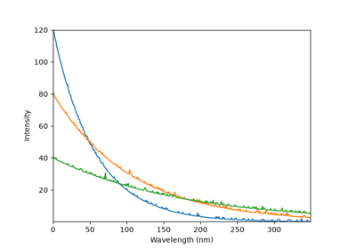
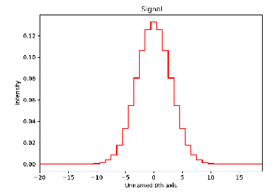
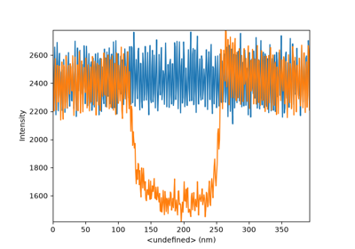
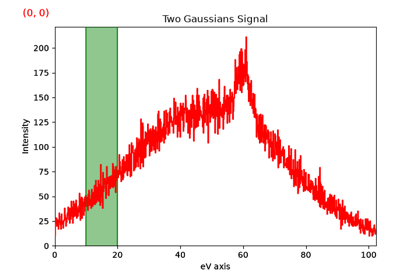

Gallery of Examples#
This gallery contains the commented code for short examples illustrating simple tasks that can be performed with HyperSpy.
Markers#
Gallery of examples on using HyperSpy markers.

Circle Markers with Radius Dependent Coloring

Varying number of arrows per navigation position

Signal Creation#
Below is a gallery of examples on creating a signal and plotting.
Data Visualization#
This gallery shows how to plot data using the convenience functions
plot_spectra(), plot_images() and
plot_signals().
Unlike the plot(), these functions
can plot multiple signal together and can be useful to compose figure
comparing signals, etc.

Plotting spectra with different y-axis scales
Extensions#
This gallery of examples is relevant to users interested in developping HyperSpy extensions and illustrates some of the HyperSpy implementions and patterns.

Implementation of a model supporting convolution of components
Loading, saving and exporting#
Below is a gallery of examples on loading, saving and exporting data.
Model fitting#
Below is a gallery of examples on model fitting.
Making Custom Layouts for Plots#
Below is a gallery of examples on making simple custom layouts for plotting data
using matplotlib.figure.SubFigure.
Note
Plotting data with subfigures is slower than using separates figures.
Processing#
Below is a gallery of examples on signal processing.
Region of Interest#
Below is a gallery of examples on using regions of interest with HyperSpy signals.


Extract line profile from image interactively

Interactive integration of one dimensional signal
Simple simulations#
Below is a gallery of examples on simulating signals which can be used to test HyperSpy functionalities